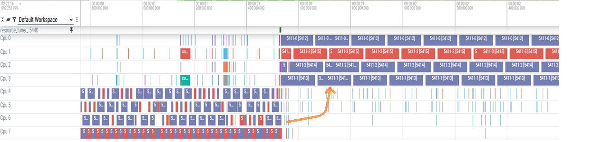
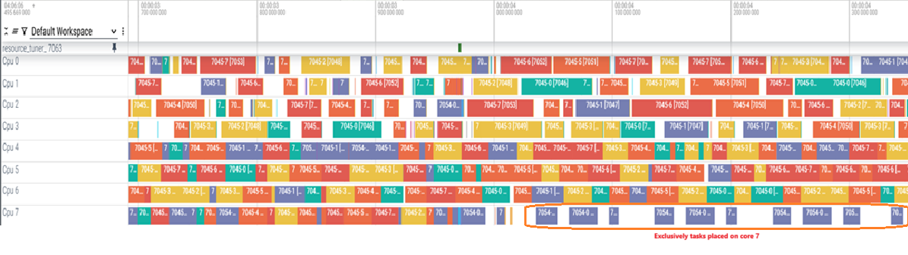
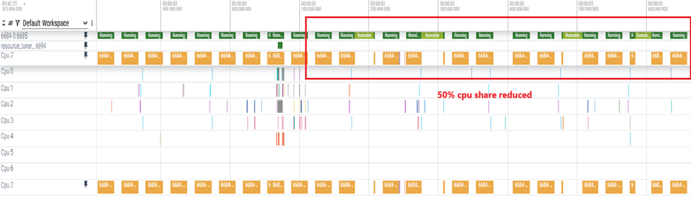
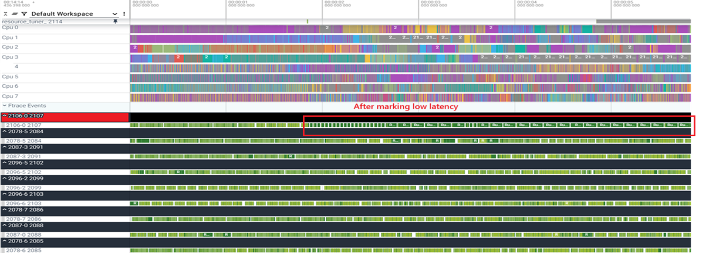
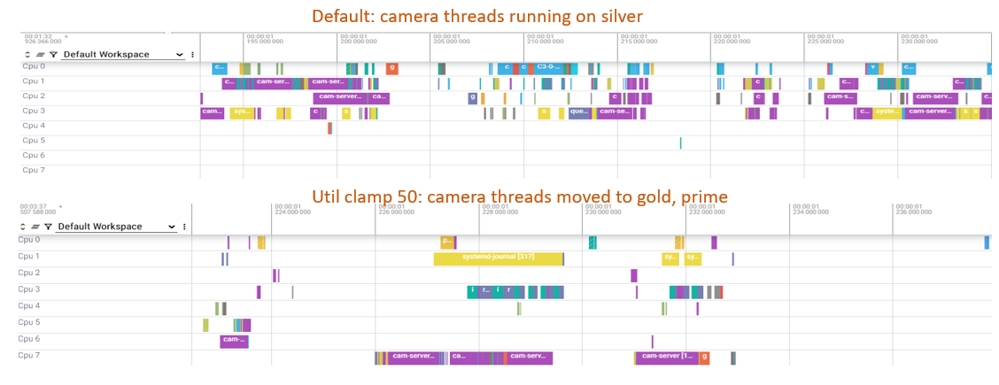
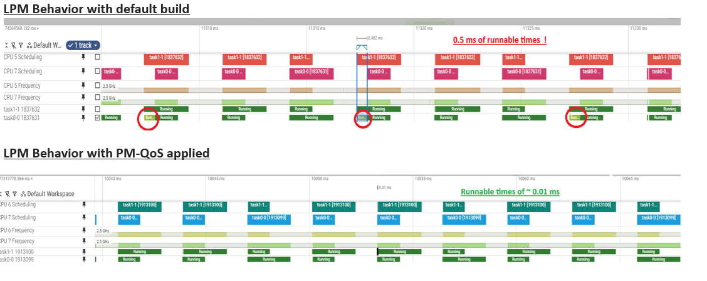

- Generated on Tue Mar 10 2026 10:30:09 for Userspace Resource Manager by
 1.9.8
1.9.8
|
Userspace Resource Manager
|
Userspace Resource Manager (URM) is a lightweight, extensible framework designed to intelligently manage and provision system resources from userspace. It brings together two key components that enable dynamic, context‑aware optimization of performance and power across diverse embedded and resource‑constrained environments:
Modern workloads vary drastically across segments like servers, compute, XR, mobile, and IoT. Each use case exhibits unique characteristics. Some may demand high CPU frequency, others may require sustained GPU throughput, and many hinge on efficient caching or more memory bandwidth.
At the same time, these workloads run on a broad spectrum of hardware platforms with different capabilities, power envelopes, and user expectations. A "one‑size‑fits‑all" tuning approach fails in such environments.
URM addresses this challenge by offering:
This allows systems to achieve consistent performance while minimizing energy consumption.
URM help in modifying system behavior to manage intermittent workloads. For example, if a specific code segment must run at a higher CPU frequency for a certain duration, use URM APIs within that code to boost the CPU frequency. URM efficiently handles concurrent resource requests from multiple clients. When several requests are aimed at the same resource, URM aggregates them to achieve the optimal performance level needed by the device. When a client is no longer active, URM releases all the tuneresource requests associated with that client.
URM offers tuneResources, untuneResources, retuneResources APIs for provisioning system resources. Full details of these APIs and their usage examples were given in URM Interface
Here are few examples of how resources can be used for influencing system behavior

Resources: RES_CGRP_RUN_CORES, RES_CGRP_MOVE_PID
Resources: RES_CGRP_RUN_CORES_EXCL, RES_CGRP_MOVE_PID
Resources: RES_CGRP_LIMIT_CPU_TIME, RES_CGRP_MOVE_PID
Resources: RES_CGRP_CPU_LATENCY, RES_CGRP_MOVE_PID
Resources: RES_CGRP_UCLAMP_MIN, RES_CGRP_MOVE_PID
Resources: (RES_PM_QOS_LATENCY, CLUSTER_BIG_ALL_CORES)URM uses Signals, a mechanism that adjusts system resources in real time based on events such as:
These behaviors are governed by flexible, human‑readable YAML configurations, making policies easy to author, review, and evolve.
URM detects an app open and sends a URM_OPEN signal, applies tuning in yaml config if available. URM also offers signal APIs (tuneSignal, untuneSignal) which can be called from within code segments of application or framework to address the needs of any intermittent workload, scenario to get better power and perforamnce trade-off.
URM helps to tune apps, tuning can be given in yaml config file and applies this tuning when an app is opened. Developers, customers can tune their apps as per their requirement. Per-app configs were explained in detail in Per-App Configs section.
URM also provides extension APIs that allow other modules or applications to:
This ensures the framework remains adaptable as hardware, use cases, and business requirements evolve.
To get started with the project: Build and install
Resource Code is composed of two least significant bytes (the lower 16 bits) contains resource ID and next significant byte contains resource type i.e. 0xrr tt iiii (i: resource id, t: resource type, r: reserved)
The following resource codes are supported resources or operations on upstream Linux. Target or segment specific resources can be defined further. These resources can be directly used in client-side code or yaml configs and provide an easy and standard way to specify a certain resource, without needing to formulate the opcodes.
| Resource Name | Id |
|---|---|
| RES_CPU_DMA_LATENCY | 0x 00 01 0000 |
| RES_PM_QOS_LATENCY | 0x 00 01 0001 |
| RES_CPU_IDLE_DISABLE_ST0 | 0x 00 01 0002 |
| RES_CPU_IDLE_DISABLE_ST1 | 0x 00 01 0003 |
| RES_CPU_IDLE_DISABLE_ST2 | 0x 00 01 0004 |
| RES_SCHED_UTIL_CLAMP_MIN | 0x 00 03 0000 |
| RES_SCHED_UTIL_CLAMP_MAX | 0x 00 03 0001 |
| RES_SCHED_ENERGY_AWARE | 0x 00 03 0002 |
| RES_SCHED_RT_RUNTIME | 0x 00 03 0003 |
| RES_PER_TASK_AFFINITY | 0x 00 03 0004 |
| RES_SCALE_MIN_FREQ | 0x 00 04 0000 |
| RES_SCALE_MAX_FREQ | 0x 00 04 0001 |
| RES_RATE_LIMIT_US | 0x 00 04 0002 |
| RES_DEVFREQ_GPU_MAX | 0x 00 05 0000 |
| RES_DEVFREQ_GPU_MIN | 0x 00 05 0001 |
| RES_DEVFREQ_GPU_POLL_INTV | 0x 00 05 0002 |
| RES_CGRP_MOVE_PID | 0x 00 09 0000 |
| RES_CGRP_MOVE_TID | 0x 00 09 0001 |
| RES_CGRP_RUN_CORES | 0x 00 09 0002 |
| RES_CGRP_RUN_CORES_EXCL | 0x 00 09 0003 |
| RES_CGRP_FREEZE | 0x 00 09 0004 |
| RES_CGRP_LIMIT_CPU_TIME | 0x 00 09 0005 |
| RES_CGRP_RUN_WHEN_CPU_IDLE | 0x 00 09 0006 |
| RES_CGRP_UCLAMP_MIN | 0x 00 09 0007 |
| RES_CGRP_UCLAMP_MAX | 0x 00 09 0008 |
| RES_CGRP_REL_CPU_WEIGHT | 0x 00 09 0009 |
| RES_CGRP_HIGH_MEM | 0x 00 09 000a |
| RES_CGRP_MAX_MEM | 0x 00 09 000b |
| RES_CGRP_LOW_MEM | 0x 00 09 000c |
| RES_CGRP_MIN_MEM | 0x 00 09 000d |
| RES_CGRP_SWAP_MAX_MEMORY | 0x 00 09 000e |
| RES_CGRP_IO_WEIGHT | 0x 00 09 000f |
| RES_CGRP_CPU_LATENCY | 0x 00 09 0011 |
| RES_DEVFREQ_UFS_MAX | 0x 00 0a 0000 |
| RES_DEVFREQ_UFS_MIN | 0x 00 0a 0001 |
| RES_DEVFREQ_UFS_POLL_INTV | 0x 00 0a 0002 |
| RES_IRQ_AFFINE | 0x 00 0b 0000 |
| RES_DEF_IRQ_AFFINE | 0x 00 0b 0001 |
The above mentioned list of enums are available in the interface file "UrmPlatformAL.h".
Signal Code is composed of two least significant bytes (the lower 16 bits) contains signal ID and next significant byte contains signal category i.e. 0xrr cc iiii (i: signal id, t: signal category, r: reserved)
The following signal codes are supported signals. Target or segment specific custom signals can be defined further.
| Signal Code | Code |
|---|---|
| URM_SIG_APP_OPEN | 0x 00 02 0001 |
| URM_SIG_BROWSER_APP_OPEN | 0x 00 02 0002 |
| URM_SIG_GAME_APP_OPEN | 0x 00 02 0003 |
| URM_SIG_MULTIMEDIA_APP_OPEN | 0x 00 02 0004 |
The above mentioned list of enums are available in the interface file "UrmPlatformAL.h".
This section defines logical layer to improve code and config portability across different targets and segments.
Some logical maps are present in init config, these can not be changed.
Logical Cluster Map Logical IDs for clusters. Configs of cluster map can be found in InitConfigs->ClusterMap section
| LgcId | Name |
|---|---|
| 0 | "little" |
| 1 | "big" |
| 2 | "prime" |
Cgroups map Logical IDs for cgroups. Configs of cgroups map in InitConfigs->CgroupsInfo section
| Lgc Cgrp No | Cgrp Name |
|---|---|
| 0 | "root" |
| 1 | "init.scope" |
| 2 | "system.slice" |
| 3 | "user.slice" |
| 4 | "urm.slice" |
Mpam Groups Map Logical IDs for MPAM groups. Configs of MPAM group map in InitConfigs->MpamGroupsInfo section
| LgcId | Mpam grp Name |
|---|---|
| 0 | "default" |
| 1 | "video" |
| 2 | "camera" |
| 3 | "games" |
Resource Types These are defined in UrmPlatformAL.h
| Resource Type | type | Resource Type | type |
|---|---|---|---|
| Cpu Lpm | 0 | Memory Qos | 7 |
| Cache Mgmt | 1 | Mpam Qos | 8 |
| Cpu Sched | 3 | Cgroup Ops | 9 |
| Cpu Freq | 4 | Storage IO | 10 |
| Gpu Opp | 5 | Custom | 128+ |
| Npu | 6 |
Signal Categories These are defined UrmPlatformAL.h
| Signal Category | Value |
|---|---|
| URM_SIG_CAT_TEST | 1 |
| URM_SIG_CAT_GENERIC | 2 |
| URM_SIG_CAT_MULTIMEDIA | 3 |
| URM_SIG_CAT_GAMING | 4 |
| URM_SIG_CAT_BROWSER | 5 |
| URM_SIG_CAT_CUSTOM | 128+ |
Custom resource types and signal categories must be >=128 to avoid conflicts with default types.
This API suite allows you to manage system resource provisioning through tuning requests. You can issue, modify, or withdraw resource tuning requests with specified durations and priorities.
APIs examples: https://github.com/qualcomm/userspace-resource-manager/tree/main/docs/Examples
Description: Issues a resource provisioning (or tuning) request for a finite or infinite duration.
API Signature:
Parameters:
duration (int64_t): Duration in milliseconds for which the Resource(s) should be Provisioned. Use -1 for an infinite duration.properties (int32_t): Properties of the Request.
numRes (int32_t): Number of resources to be tuned as part of the Request.resourceList (SysResource*): List of Resources to be provisioned as part of the Request.Returns: int64_t
retune or untune operations)-1 otherwise.mResCode (uint32_t): An unsigned 32-bit unique identifier for the resource. It encodes essential information that is useful in abstracting away the system specific details.
mResInfo (int32_t): Encodes operation-specific information such as the Logical cluster and Logical core ID, and MPAM part ID.
mOptionalInfo (int32_t): Additional optional metadata, useful for custom or extended resource configurations.
mNumValues (int32_t): Number of values associated with the resource. If multiple values are needed, this must be set accordingly.
Value / Values (uint32_t *): It is a single value when the resource requires a single value or a pointer to an array of values for multi-value configurations.
This section describes how this code can be constructed. URM implements a platform abstraction layer (logical layer) which provides a transparent and consistent way for indexing resources. This makes it easy for the clients to identify the resource they want to provision, without needing to worry about portability issues across targets.
These fields combined together can uniquely identify a resource across targets, hence making the code operating on these resources interchangable.
The macro CONSTRUCT_RES_CODE can be used for generating opcodes directly from the resource type and resource id:
The ResInfo field specified as part of the SysResource struct encodes the following information:
The macros SET_RESOURCE_CLUSTER_VALUE and SET_RESOURCE_CORE_VALUE are provided for clients to easily specify the configuration core / cluster information, if needed.
Resource mOptionalInfo The mOptionalInfo field, as the name suggests can be used to store any optional information needed for resource application. It can be used as part of customized resource applier / tear callbacks if needed, else it can be left as 0.
Resource mNumValues and value(s) URM Allows for both single and multi-valued configurations. The SysResource struct allows for storing all the configuration values. The field mNumValues specifies the number of values to be configured
The following example shows a simple single-valued config, use the "value" field in the mResValue union.
If multi-valued config is needed, the use the "values" field in the mResValue union.
The caller is responsible for freeing SysResource objects and any allocated value arrays.
The memory allocated for the resourceList needs to be freed by the caller.
Description: Modifies the duration of an existing tune request.
API Signature:
Parameters:
handle (int64_t): Handle of the original request, returned by the call to tuneResources.duration (int64_t): New duration in milliseconds. Use -1 for an infinite duration.Returns: int8_t
0 if the request was successfully submitted.-1 otherwise.The below example demonstrates the use of the retuneResources API for modifying a request's duration. Note: Only extension of request duration is allowed.
Description: Withdraws a previously issued resource provisioning (or tune) request.
API Signature:
Parameters:
handle (int64_t): Handle of the original request, returned by the call to tuneResources.Returns: int8_t
0 if the request was successfully submitted.-1 otherwise.The below example demonstrates the use of the untuneResources API for untuning (i.e. reverting) a previously issued tune Request.
Description: Tune the signal with the given ID.
API Signature:
Parameters:
sigID (uint32_t): A uniqued 32-bit (unsigned) identifier for the SignalsigType (uint32_t): Type of the signal, sigType is typically used in multimedia pipelines (camera, encoder, transcoder) where the same signal ID may represent multiple mode variants. Default value is 0.duration (int64_t): Duration (in milliseconds) to tune the Signal for. A value of -1 denotes infinite duration.properties (int32_t): Properties of the Request.
appName (const char*): Name of the Application that is issuing the Requestscenario (const char*): Use-Case ScenarionumArgs (int32_t): Number of Additional Arguments to be passed as part of the Requestlist (uint32_t*): List of Additional Arguments to be passed as part of the RequestReturns: int64_t
-1: If the Request could not be sent to the server.The macro "CONSTRUCT_SIG_CODE" can be used for generating opcodes directly if the ResType and ResID are known:
Description: Release (or free) the signal with the given handle.
API Signature:
Parameters:
handle (int64_t): Request Handle, returned by the tuneSignal API call.Returns: int8_t
0: If the Request was successfully sent to the server.-1: OtherwiseDescription: Tune the signal with the given ID.
API Signature:
Parameters:
sigId (uint32_t): A uniqued 32-bit (unsigned) identifier for the SignalsigType (uint32_t): Type of the signal, useful for use-case based signal filtering and selection, i.e. in situations where multiple variants of the same core signal (with minor changes) need to exist to support different use-case scenarios. If no such filtering is needed, pass this field as 0.duration (int64_t): Duration (in milliseconds)properties (int32_t): Properties of the Request.
appName (const char*): Name of the Application that is issuing the Requestscenario (const char*): Name of the Scenario that is issuing the RequestnumArgs (int32_t): Number of Additional Arguments to be passed as part of the RequestnumArgs (uint32_t*): List of Additional Arguments to be passed as part of the RequestReturns: int8_t
0: If the Request was successfully sent to the server.-1: OtherwiseDescription: Gets a property from the config file, this is used as property config file used for enabling or disabling internal features in URM, can also be used by modules or clients to enable/disable features in their software based on property configs in URM.
API Signature:
Parameters:
prop (const char*): Name of the Property to be fetched.buffer (char*): Pointer to a buffer to hold the result, i.e. the property value corresponding to the specified name.buffer_size (size_t): Size of the buffer.def_value (const char*): Value to be written to the buffer in case a property with the specified Name is not found in the Config StoreReturns: int8_t
0 If the Property was found in the store, and successfully fetched-1 otherwise.URM utilises YAML files for configuration. This includes the resources, signal config files. Target can provide their own config files, which are specific to their use-case through the extension interface
Initialisation configs are mentioned in InitConfig.yaml file. This config enables URM to setup the required settings at the time of initialisation before any request processing happens. This also defines logical layer for clusters, cgroup ids, mpam partitions, etc for configs and apps to use, which promotes portability across targets and segments.
Fields Description for CGroup Config
Common initialization configs are defined in /etc/urm/common/InitConfig.yaml
Tunable resources are specified via ResourcesConfig.yaml file.
Common resource configs are defined in /etc/urm/common/ResourcesConfig.yaml.
Each resource is defined with the following fields: Fields Description
| Field | Type | Description | Default Value |
|---|---|---|---|
ResID | Integer (Mandatory) | unsigned 16-bit Resource Identifier, unique within the Resource Type. | Not Applicable |
ResType | Integer (Mandatory) | unsigned 8-bit integer, indicating the Type of the Resource, for example: cpu / dcvs | Not Applicable |
Name | string (Optional) | Descriptive name | Empty String |
Path | string (Optional) | Full resource path of sysfs or procfs file path (if applicable). | Empty String |
Supported | boolean (Optional) | Indicates if the Resource is Eligible for Provisioning. | False |
HighThreshold | integer (int32_t) (Mandatory) | Upper threshold value for the resource. | Not Applicable |
LowThreshold | integer (int32_t) (Mandatory) | Lower threshold value for the resource. | Not Applicable |
Permissions | string (Optional) | Type of client allowed to Provision this Resource (system or third_party). | third_party |
Modes | array (Optional) | Display modes applicable ("display_on", "display_off", "doze"). | 0 (i.e. not supported in any Mode) |
Policy | string(Optional) | Concurrency policy ("higher_is_better", "lower_is_better", "instant_apply", "lazy_apply"). | lazy_apply |
Unit | string(Optional) | Translation Unit ("MB", "GB", "KHz", "Hz" etc). | NA (multiplier = 1) |
ApplyType | string (Optional) | Indicates if the resource can have different values, across different cores, clusters or cgroups. | global |
TargetsEnabled | array (Optional) | List of Targets on which this Resource should be available for tuning | Empty List |
TargetsDisabled | array (Optional) | List of Targets on which this Resource should not be available for tuning | Empty List |
PropertiesConfig.yaml file stores various properties which are used by URM modules internally. For example, to allocate sufficient amount of memory for different types, or to determine the Pulse Monitor duration. Client can also use this as a property store to store their properties which gives it flexibility to control properties depending on the target.
Field Descriptions
| Field | Type | Description | Default Value |
|---|---|---|---|
Name | string (Mandatory) | Unique name of the property | Not Applicable |
Value | integer (Mandatory) | The value for the property. | Not Applicable |
Common resource configs are defined in /etc/urm/common/PropertiesConfig.yaml.
The file SignalsConfig.yaml defines the signal configs.
Field Descriptions
| Field | Type | Description | Default Value |
|---|---|---|---|
SigId | Integer (Mandatory) | 16 bit unsigned Signal Identifier, unique within the signal category | Not Applicable |
Category | Integer (Mandatory) | 8 bit unsigned integer, indicating the Category of the Signal, for example: Generic, App Lifecycle. | Not Applicable |
Type | Integer (optional) | 32 bit unsigned integer, indicating the type of signal ex. camera encode type, no.of multiple streams in cam encode, etc | Not Applicable |
Name | string (Optional) | Empty String | |
Enable | boolean (Optional) | Indicates if the Signal is Eligible for Provisioning. | False |
TargetsEnabled | array (Optional) | List of Targets on which this Signal can be Tuned | Empty List |
TargetsDisabled | array (Optional) | List of Targets on which this Signal cannot be Tuned | Empty List |
Permissions | array (Optional) | List of acceptable Client Level Permissions for tuning this Signal | third_party |
Timeout | integer (Optional) | Default Signal Tuning Duration to be used in case the Client specifies a value of 0 for duration in the tuneSignal API call. | 1 (ms) |
Resources | array (Mandatory) | List of Resources. | Not Applicable |
Example
Common Signal configs are defined in /etc/urm/common/SignalsConfig.yaml.
The file PerApp.yaml defines the per-app configs.
Field Descriptions
| Field | Type | Description | Default Value |
|---|---|---|---|
App | String (Mandatory) | Name of the App, equivalent to process "comm" | Not Applicable |
Threads | array (Optional) | List of app threads (identified by their "comm" value as specified in /proc/{pid}/comm) to be considered as in-focus, hence moved to the focused-cgroup when the app (with the above identifier) is launched. | Empty List |
Configurations | array (optional) | List of Signal Configurations indicating the signals to be acquired when this app is launched. Note: The specified signal opcodes should correspond to actual configurations in the SignalsConfig.yaml file. | Empty List |
Example
PerApp configs should be defined in /etc/urm/custom/PerApp.yaml.
Urm provides by default some base / default configs for Resources, Signals, Init and Properties. These configs can be extended or overriden via user-specified customizations. Urm parses the configs in the following order: Common -> Target-Specific -> Custom.
Where target-specific configs refers to configs indexed by the target identifier, these configs are unique to that target.
Custom Configs are user-specified via the Extensions Interface, as described in detail later in the section: "Customizations & Extensions".
Both target-specific and custom configs are optional.
URM provides a minimal CLI to interact with the server. This is provided to help with development and debugging purposes.
Where:
duration: Duration in milliseconds for the tune requestpriority: Priority level for the tune request (HIGH: 0 or LOW: 1)num: Number of resourcesres: List of resource ResCode, ResInfo (optional) and Values to be tuned as part of this requestExample:
Where:
handle: Handle of the previously issued tune request, which needs to be untunedExample:
Where:
handle: Handle of the previously issued tune request, which needs to be retunedduration: The new duration in milliseconds for the tune requestExample:
Where:
key: The Prop name of which the corresponding value needs to be fetchedExample:
Where:
key: The Prop name of which the corresponding value needs to be fetchedExample:
The URM extesnion framework allows target chipsets to extend its functionality and customize it to their use-case. Extension interface essentially provides a series of hooks to the targets or other modules to add their own custom behaviour. This is achieved through a lightweight extension interface. This happens in the initialisation phase before the service is ready for requests.
Specifically the extension interface provides the following capabilities:
Extension APIs
Registers a custom resource applier (URM_REGISTER_RES_APPLIER_CB) handler with the system. This allows the framework to invoke a user-defined callback when a tune request for a specific resource opcode is encountered. A function pointer to the callback is to be registered. Now, instead of the default resource handler (provided by URM), this callback function will be called when a resource provisioning request for this particular resource opcode arrives.
Registers a custom resource teardown handler (URM_REGISTER_RES_TEAR_CB) with the system. This allows the framework to invoke a user-defined callback when an untune request for a specific resource opcode is encountered. A function pointer to the callback is to be registered. Now, instead of the normal resource handler (provided by URM), this callback function will be called when a resource deprovisioning request for this particular resource opcode arrives.
Usage Example
Plugins can fetch target information using the "GET_TARGET_INFO" helper utility provided by URM. The following information can be retrieved:
Usage:
For example, to get a cpu mask (which can be used, for example, for IRQ affinity use cases):
To simply get a mask corresponding to the highest capacity cluster on the target, for all cores, the GET_MAX_CLUSTER query can be used, as follows:
Custom config files either can be placed in /etc/urm/custom or Registers a custom configuration (URM_REGISTER_CONFIG) YAML file. This enables target chipset to provide their own config files, i.e. allowing them to provide their own custom resources for example.
Usage Example
The above line of code, will tell URM to read the resource configs from the file "/etc/custom_dir/targetResourceConfigCustom.yaml" instead of the default file. Note: the target chipset must honour the structure of the YAML files, for them to be read and registered successfully.
Custom signal config file can be specified similarly:
URM allows to add custom configs and override configs items. It also provides additional configs.
Custom init configs can be added to init config yaml. New init sections can be defined. For example "ClusterMap" can be redefined if your target has 4 clusters. Also you can define new section like MPAMgroupsInfo, see the example below.
Fields Description for Mpam Group Config
| Field | Type | Description | Default Value |
|---|---|---|---|
ID | int32_t(Mandatory) | A 32-bit unique identifier | |
| for the Mpam Group | Not Applicable | ||
Priority | int32_t(Optional) | Mpam Group Priority | 0 |
Name | string (Optional) | Descriptive name for the | |
| Mpam Group | Empty String |
Fields Description for Cache Info Config
| Field | Type | Description | Default Value |
|---|---|---|---|
Type | string (Mandatory) | Type of cache (L2 or L3) | |
| for which config is intended | Not Applicable | ||
NumCacheBlocks | int32_t(Mandatory) | Number of Cache blocks for | |
| the above mentioned type, | |||
| to be managed by URM | Not Applicable | ||
PriorityAware | boolean(Optional) | Boolean flag indicating if | |
| the Cache Type supports | |||
| different Priority Levels | false |
Initialisation configs can be customized. Entire init config file can be overided by
Custom resources can be added to resources config yaml. New resources can be defined. For example "MY_OWN_CPU_SCHED_RESOURCE" defined in the example below in sched resource type (you can also choose custom resource type), and ID is taken next resource ID available after upstream resources, resource ID can also be any custom ID that you choose if you want.
Resources config yaml file can be given in one of the below ways
Custom properties can be added to properties config yaml. Default property can be overridden or new properties can be defined. For example "resource_tuner.maximum.concurrent.requests" default property overridden with new value, and a new property "user_own_property" defined in the example below
Properties config yaml file can be given in one of the below ways
Custom signal configs can be added to signals config yaml. New signal configs can be defined. For example "URM_SIG_VIDEO_DECODE" is defined in the example below, you can use custom signal category, Id, and resources.
Signal config yaml file can be given in one of the below ways
The file TargetConfig.yaml defines the target configs, note this is an optional config, i.e. this file need not necessarily be provided. URM can dynamically fetch system info, like target name, logical to physical core / cluster mapping, number of cores etc. Use this file, if you want to provide this information explicitly. If the TargetConfig.yaml is provided, URM will always overide default dynamically generated target information with given config and use it. Also note, there are no field-level default values available if the TargetConfig.yaml is provided. Hence if you wish to provide this file, then you'll need to provide all the complete required information.
| Field | Type | Description | Default Value |
|---|---|---|---|
TargetName | string | Target Identifier | Not Applicable |
ClusterInfo | array | Cluster ID to Type Mapping | Not Applicable |
ClusterSpread | array | Cluster ID to Per Cluster Core Count Mapping | Not Applicable |
The file ExtFeaturesConfig.yaml defines the Extension Features, note this is an optional config, i.e. this file need not necessarily be provided. Use this file to specify your own custom features. Each feature is associated with it's own library and an associated list of signals. Whenever a relaySignal API request is received for any of these signals, URM will forward the request to the corresponding library. The library is required to implement the following 3 functions:
Field Descriptions
| Field | Type | Description | Default Value |
|---|---|---|---|
FeatId | Integer | unsigned 32-bit Unique Feature Identifier | Not Applicable |
LibPath | string | Path to the associated library | Not Applicable |
Signals | array | List of signals to subscribe the feature to | Not Applicable |
Example Config:
Userspace resource manager (URM) contains
The Contextual Classifier is an optional module designed to identify the static context of workloads (e.g., whether an application is a game, multimedia app, or browser) based on an offline-trained model.
Key functionalities include:
ApplyActions to send tuning requests and RemoveActions to untune for process events.fasttext_model_supervised.bin, classifier-blocklist.txt, and ignore-tokens.txt.Flow of Events:
Resource Tuner architecture is captured above.
Here is a more detailed explanation of the key features discussed above:
Certain resources can be tuned only by system clients and some which have no such restrictions and can be tuned even by third party clients. The client permissions are dynamically determined, the first time it makes a request. If a client with third party permissions tries to tune a resource, which allows only clients with system permissions to tune it, then the request shall be dropped.
To ensure efficient and predictable handling of concurrent requests, each system resource is governed by one of four predefined policies. Selecting the appropriate policy helps maintain system stability, optimize performance/power, and align resource behavior with application requirements.
As part of the tuneResources API call, client is allowed to specify a desired priority level for the request. URM supports 2 priority levels:
However when multiplexed with client-level permissions, effetive request level priorities would be
Requests with a higher priority will always be prioritized, over another request with a lower priority. Note, the request priorities are related to the client permissions. A client with system permission is allowed to acquire any priority level it wants, however a client with third party permissions can only acquire either third party high (TPH) or third party low (TPL) level of priorities. If a client with third party permissions tries to acquire a System High or System Low level of priority, then the request will not be honoured.
To improve efficiency and conserve memory, it is essential to regularly check for dead clients and free up any system resources associated with them. This includes, untuning all (if any) ongoing tune request issued by this client and freeing up the memory used to store client specific data (Example: client's list of requests (handles), health, permissions, threads associated with the client etc). URM ensures that such clients are detected and cleaned up within 90 seconds of the client terminated.
URM performs these actions by making use of two components:
Pulse Monitor runs on a separate thread peroidically.
URM has a rate limiter module that prevents abuse of the system by limiting the number of requests a client can make within a given time frame. This helps to prevent clients from overwhelming the system with requests and ensures that the system remains responsive and efficient. Rate limiter works on a reward/punishment methodology. Whenever a client requests the system for the first time, it is assigned a "Health" of 100. A punishment is handed over if a client makes subsequent new requests in a very short time interval (called delta, say 2 ms). A Reward results in increasing the health of a client (not above 100), while a punishment involves decreasing the health of the client. If at any point this value of Health reaches zero then any further requests from this client wil be dropped. Value of delta, punishment and rewards are target-configurable.
URM's RequestManager component is responsible for detecting any duplicate requests issued by a client, and dropping them. This is done by checking against a list of all the requests issued by a client to identify a duplicate. If it is, then the request is dropped. If it is not, then the request is added and processed. Duplicate checking helps to improve system efficiency, by saving wasteful CPU time on processing duplicates.
Logical to physical core/cluster mapping helps to achieve application code portability across different chipsets on client side. Client can specify logical values for core and cluster. URM will translate these values to their physical counterparts and apply the request accordingly. Logical to physical mapping helps to create system independent layer and helps to make the same client code interchangable across different targets.
Logical mapping entries can be found in InitConfig.yaml and can be modified if required.
Logical layer values always arranged from lower to higher cluster capacities. If no names assigned to entries in the dynamic mapping table then cluster'number' will be the name of the cluster for ex. LgcId 4 named as "cluster4"
below table present in InitConfigs->ClusterMap section
| LgcId | Name |
|---|---|
| 0 | "little" |
| 1 | "big" |
| 2 | "prime" |
URM reads machine topology and prepares logical to physical table dynamically in the init phase, similar to below one
| LgcId | PhyId |
|---|---|
| 0 | 0 |
| 1 | 1 |
| 2 | 3 |
| 3 | 2 |
The system's operational modes are influenced by the state of the device's display. To conserve power, certain system resources are optimized only when the display is active. However, for critical components that require consistent performance—such as during background processing or time-sensitive tasks, resource tuning can still be applied even when the display is off, including during low-power states like doze mode. This ensures that essential operations maintain responsiveness without compromising overall energy efficiency.
In case of server crash, URM ensures that all the resource sysfs nodes are restored to a sane state, i.e. they are reset to their original values. This is done by maintaining a backup of all the resource's original values, before any modification was made on behalf of the clients by urm. In the event of server crash, reset to their original values in the backup.
The Users are free to pick and choose the URM modules they want for their use-case and which fit their constraints. The Framework Module is the core/central module, however if the users choose they can add on top of it other Modules: signals and profiles.
URM provides a MemoryPool component, which allows for pre-allocation of memory for certain commonly used type at the time of server initialization. This is done to improve the efficiency of the system, by reducing the number of memory allocations and deallocations that are required during the processing of requests. The allocated memory is managed as a series of blocks which can be recycled without any system call overhead. This reduces the overhead of memory allocation and deallocation, and improves the performance of the system.
Further, a ThreadPool component is provided to pre-allocate processing capacity. This is done to improve the efficiency of the system, by reducing the number of thread creation and destruction required during the processing of Requests, further ThreadPool allows for the threads to be repeatedly reused for processing different tasks.
For questions, suggestions, or contributions, feel free to reach out:
This project is licensed under the BSD 3-Clause Clear License.